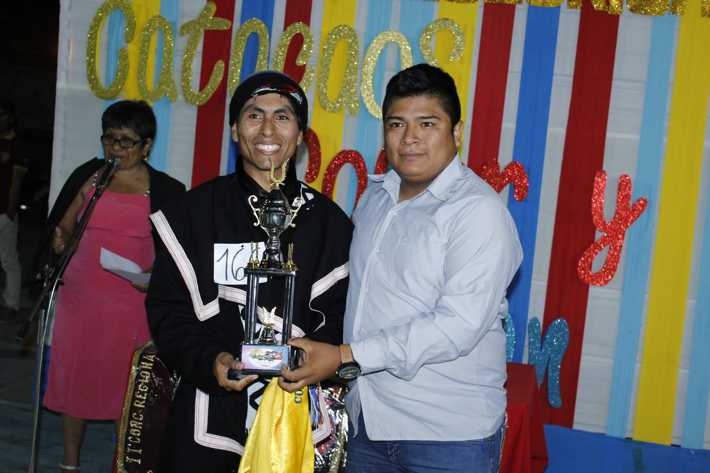
🏅 Mejor Danzante Masculino
Carlos Salazar
A.F. Tayta Sol y Raices
La segunda edición consolidó el crecimiento del concurso, reuniendo a más agrupaciones y estrenando nuevas experiencias para el público.
20 de octubre de 2018
Catacaos, Piura
7 agrupaciones
Danzas Nacionales
Una mirada general a los hechos más importantes de esta edición.
La segunda edición de Catacaos, Color y Tradición se realizó el 20 de octubre de 2018 como parte de las celebraciones por el IX aniversario del Grupo Folklórico Pasión y Sentimiento Cultural. El concurso continuó consolidándose como un espacio dedicado a la promoción del folclore y la identidad cultural.
Con una mayor convocatoria y una mejor organización, esta edición reafirmó el compromiso de brindar un escenario de calidad para las agrupaciones folklóricas del norte del Perú.
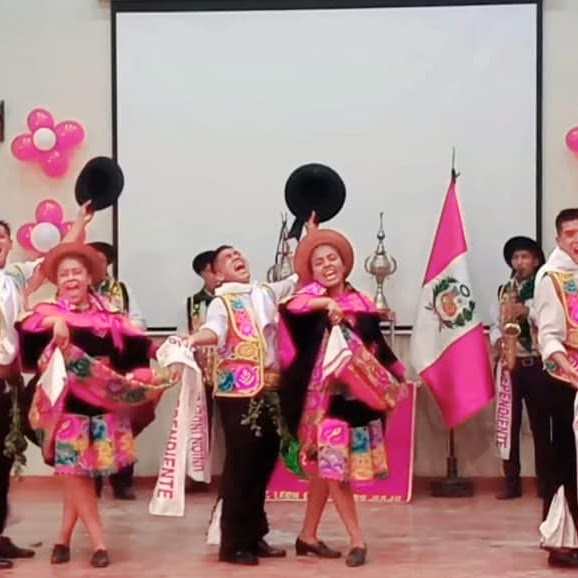
Siete agrupaciones participaron en esta edición, superando el número de la edición anterior y ofreciendo presentaciones llenas de color, música y tradición.
Además, por primera vez se incorporó el reconocimiento al Mejor Pasacalle, permitiendo que las delegaciones mostraran su creatividad y entusiasmo desde su recorrido por la Avenida Principal de Catacaos.
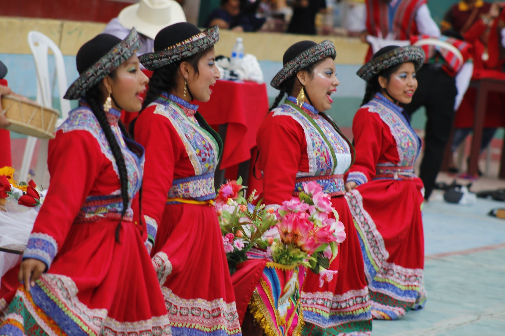
La edición 2018 quedó marcada porque Tierra de Sol consiguió el primer bicampeonato en la historia de Catacaos, Color y Tradición, consolidándose como la mejor agrupación de aquella edición.
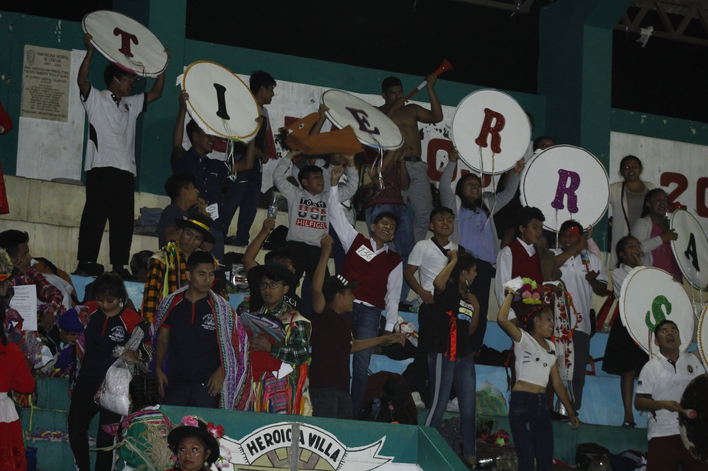


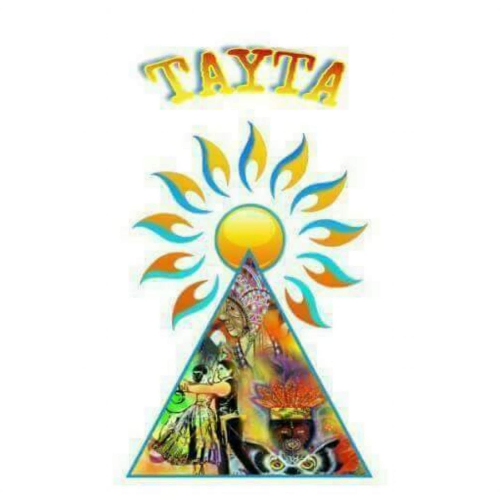
📱 Desliza la tabla para ver todos los datos.
| Agrupación | Danza | J1 | J2 | J3 | Total |
|---|---|---|---|---|---|
| Sentimiento y Corazón | Carnaval de Santiago de Chocorvos | 56 | 45 | 48 | 149 |
| Raymi Danzas | Entrada de San Miguel | 57 | 49 | 46 | 152 |
| Corazón Costumbrista | Shacshas de Huaraz | 57 | 50 | 47 | 154 |
| Perú Danzante | Turcos y Cacharpari | 56 | 48 | 46 | 150 |
| Mamá Gusti | Carnaval de Huanupampa | 56 | 54 | 46 | 156 |
| Tierra de Sol | Carnaval de Usamasanga | 56 | 54 | 48 | 158 |
| Tayta sol y Raices | Carnaval de Putina | 51 | 42 | 45 | 138 |
📱 Desliza la tabla para ver todos los datos.
| Agrupación | Danza | J1 | J2 | J3 | Total |
|---|---|---|---|---|---|
| Sentimiento y Corazón | Diablada Puneña | 57 | 53 | 47 | 157 |
| Raymi Danzas | Torollay Pukllay | 55 | 45 | 47 | 157 |
| Corazón Costumbrista | Diablada Puneña | 57 | 55 | 47 | 159 |
| Perú Danzante | Carnaval de Huayhuas | 56 | 54 | 47 | 157 |
| Mamá Gusti | Carnaval de Congalla | 57 | 55 | 47 | 159 |
| Tierra de Sol | Herranza de Huañec | 57 | 53 | 48 | 158 |
| Tayta sol y Raices | Machu LLakini Tusuy | 50 | 53 | 46 | 149 |
| N° | Agrupación | Danza Nacional 1 | Danza Nacional 2 | Ins. | Pas. | Total |
|---|---|---|---|---|---|---|
| 1 | Tierra de Sol | 158 | 158 | 5 | 3 | 324 |
| 2 | Mamá Gusti | 156 | 159 | 5 | 3 | 323 |
| 3 | Corazón Costumbrista | 154 | 159 | 5 | 0 | 318 |
| 4 | Raymi Danzas | 152 | 157 | 5 | 3 | 317 |
| 5 | Perú Danzante | 150 | 157 | 5 | 3 | 315 |
| 6 | Sentimiento y Corazón | 149 | 157 | 5 | 3 | 314 |
| 7 | Tayta Sol y Raices | 138 | 149 | 5 | 3 | 295 |
Primer Lugar
Segundo Lugar
Tercer Lugar

A.F. Tayta Sol y Raices
A.A.F. Perú Danzante
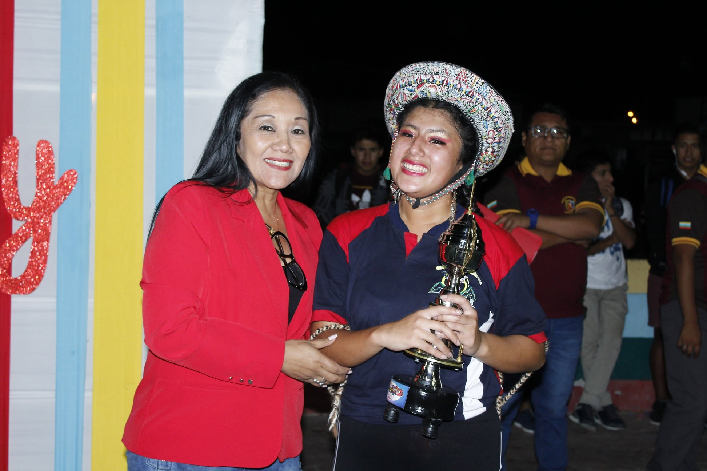
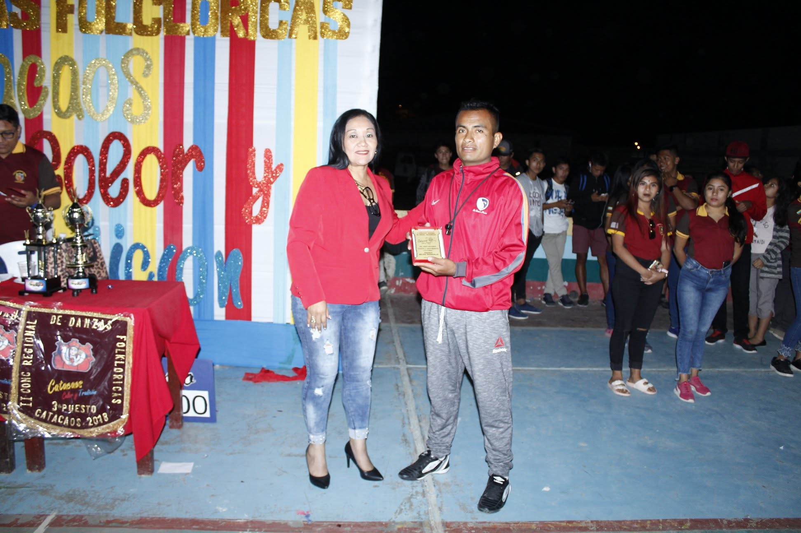
Reconocimiento al mejor pasacalle de la edición.
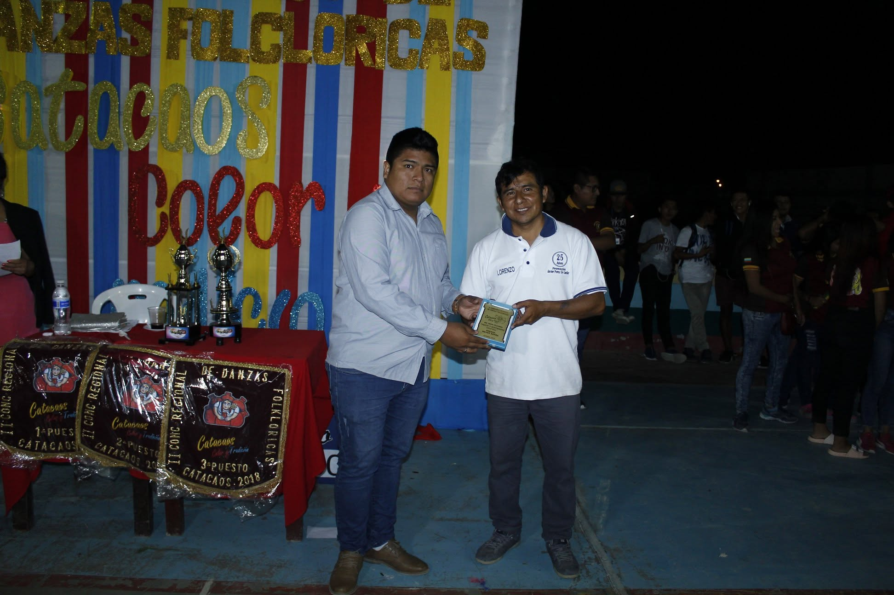
Reconocimiento al entusiasmo y apoyo del público.
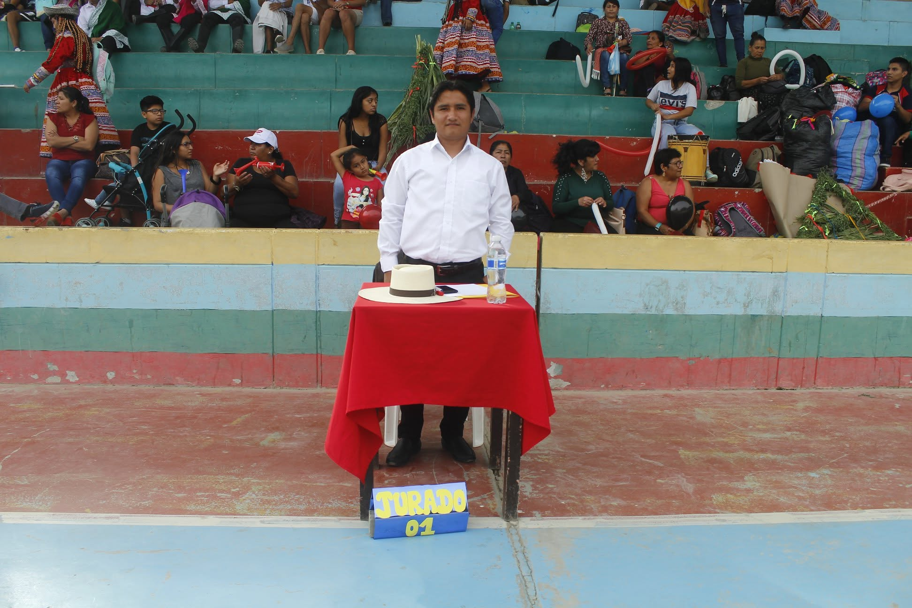
Jurado 1
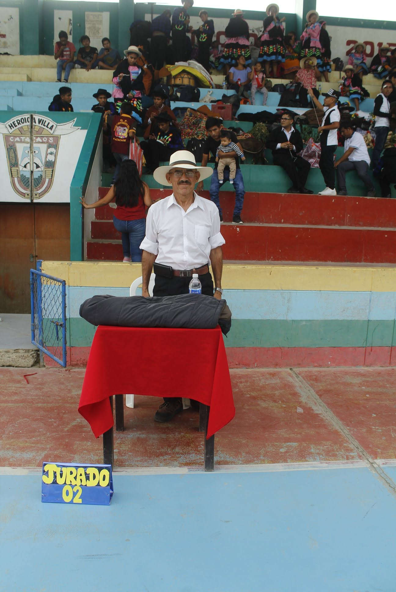
jurado 2
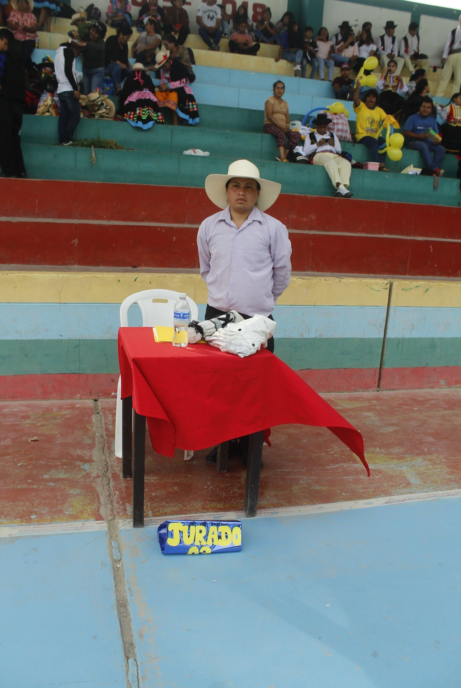
jurado 3
Pequeños detalles que hicieron especial esta edición.
Tierra de Sol se convirtió en la primera agrupación en conquistar el concurso por segunda vez consecutiva.
Cuatro agrupaciones participaron por primera vez en el concurso, ampliando la convocatoria de esta segunda edición.
Las agrupaciones de la provincia de Paita obtuvieron el campeonato, además del reconocimiento al Mejor Danzante Masculino y Mejor Danzante Femenino.
Por primera vez, el Mejor Danzante Masculino y Femenino pertenecieron a agrupaciones que no ocuparon el podio.
Tierra de Sol, Sentimiento y Corazón y Raymidanzas fueron las únicas agrupaciones que participaron por segundo año consecutivo.
El campeonato se definió por apenas un punto de diferencia entre el primer y el segundo lugar.
El jurado estuvo conformado por representantes de Lima, Trujillo y Piura, garantizando una evaluación con distintos enfoques del folclore peruano.
Cada agrupación presentó dos danzas, sumándose ambos puntajes para definir al campeón de la edición.
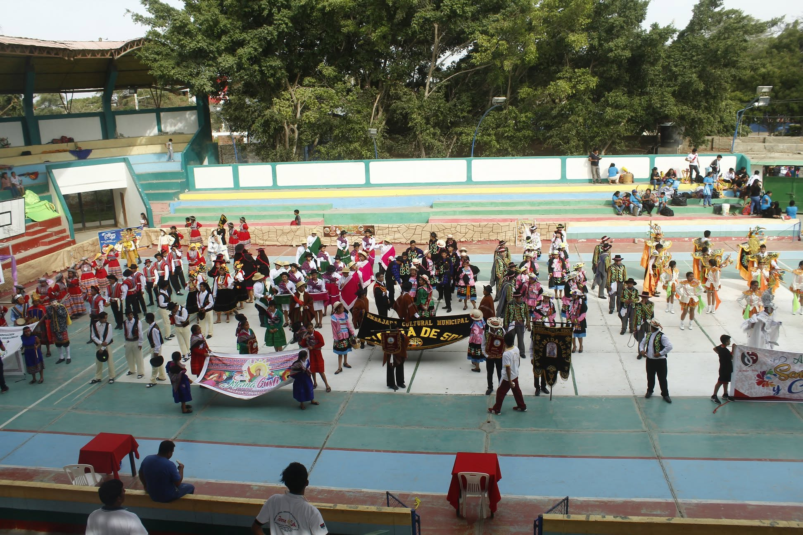
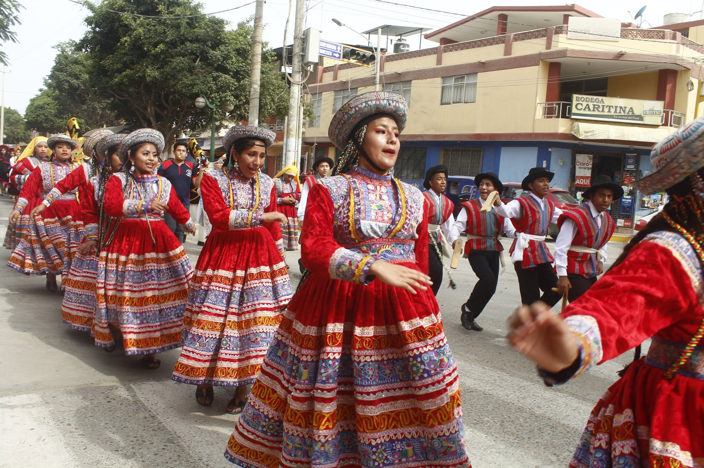
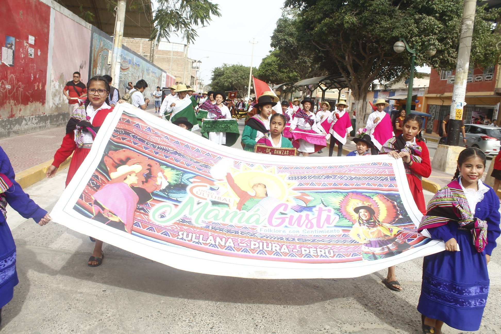
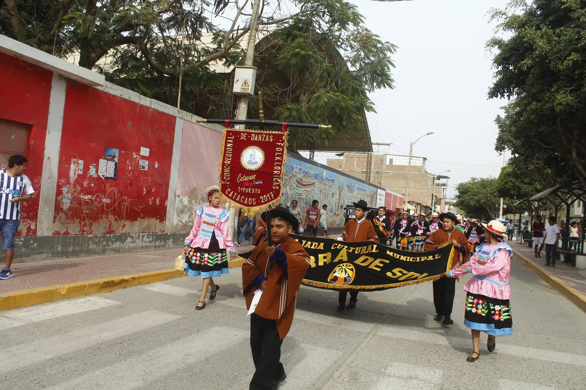